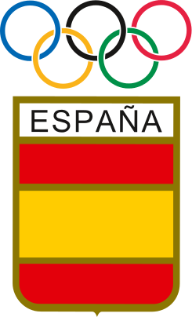
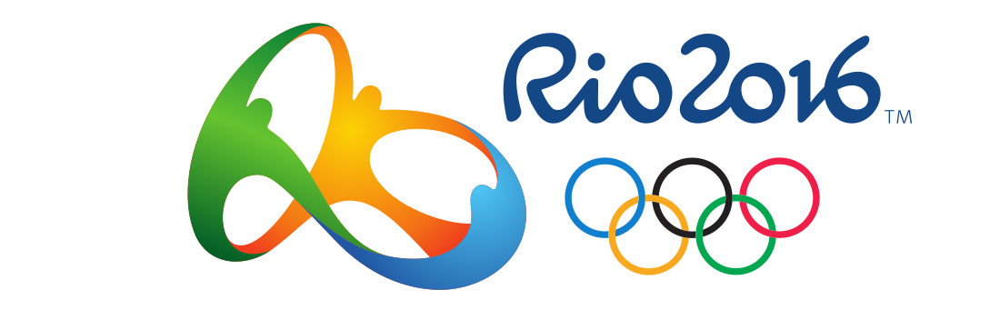
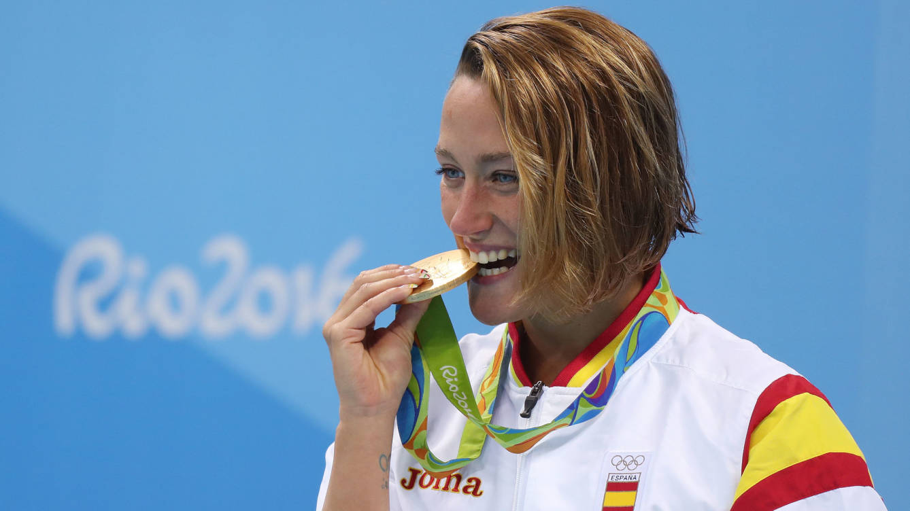
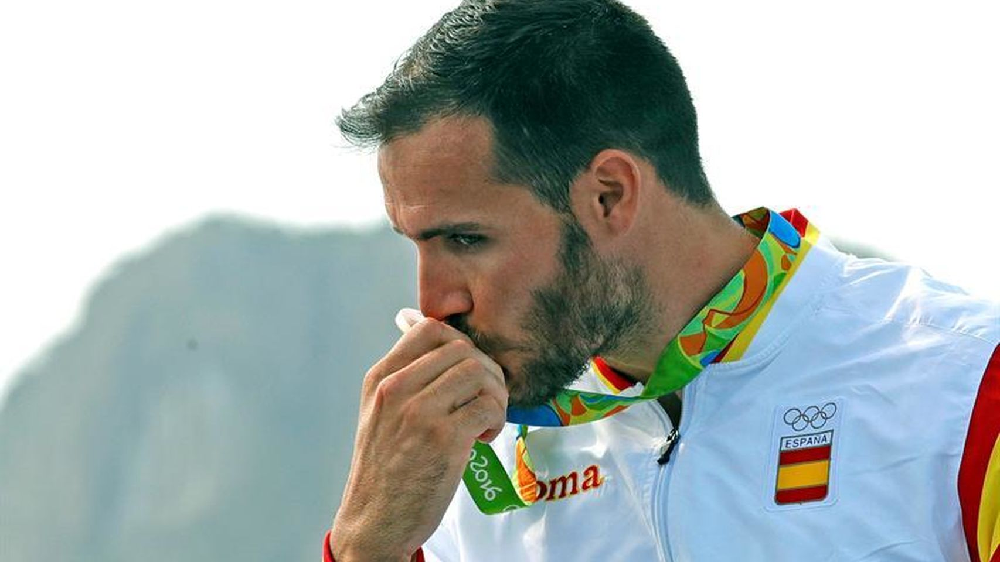
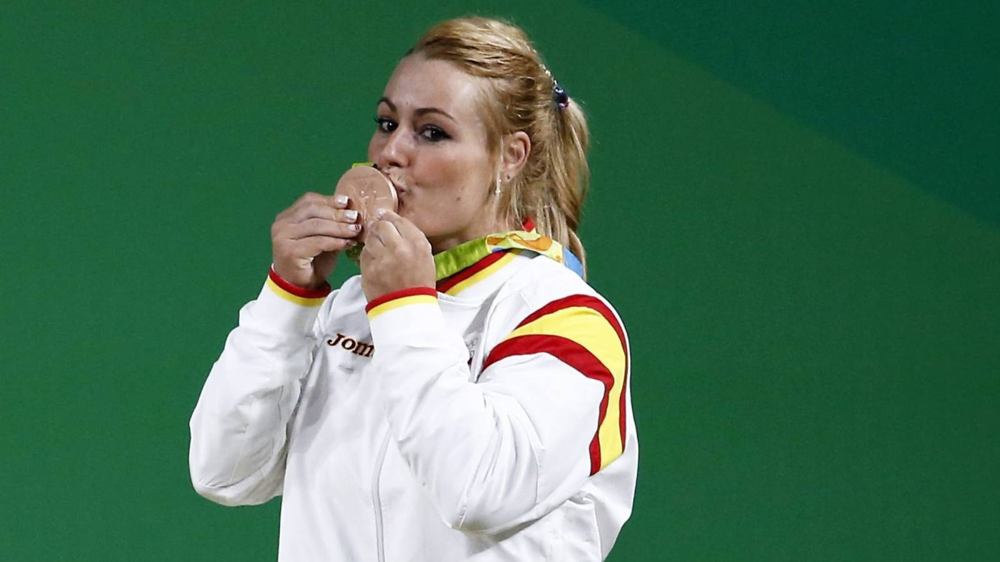
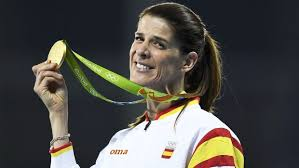
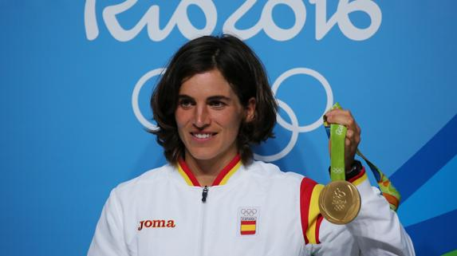
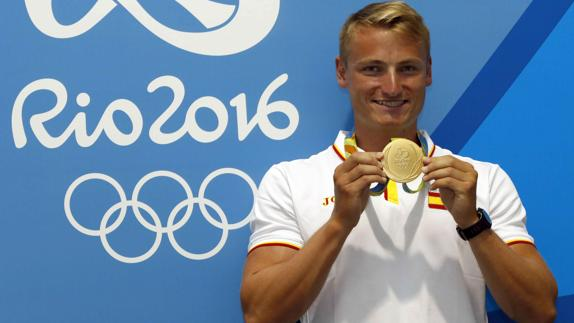
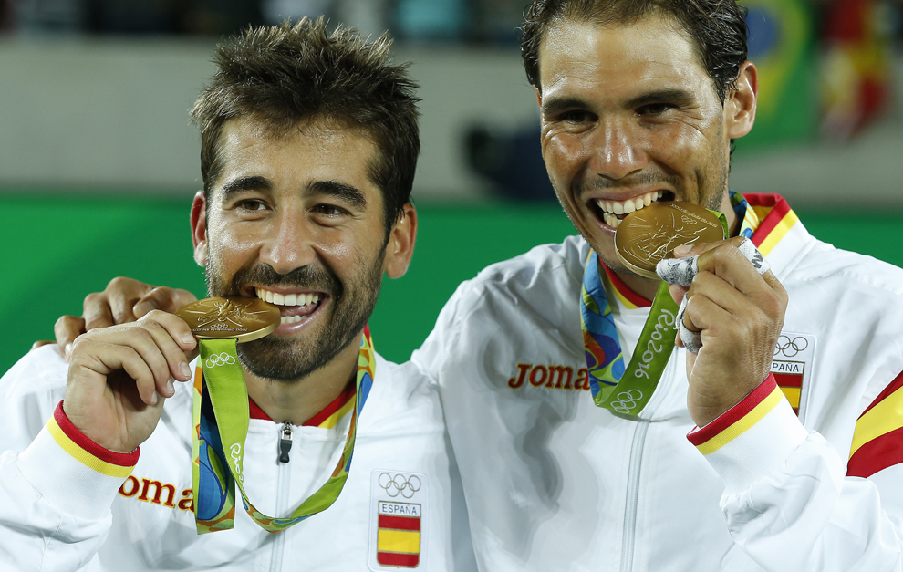

Olímpicos españoles de Rio 2016

Olímpicos españoles de Rio 2016
Mireia Belmonte
Mireia Belmonte ganadora de la medalla de oro en 200m mariposa y la bronce en 400m estilos.
Saúl Craviotto
Saúl Craviotto ganador de la medalla de oro en K2 200m y de la medalla de bronce en K1 200m.
Lydia Valentín
Lydia Valentín ganadora de la medalla de bronce en alterofilia en la categoria de 75kg.
Carolina Marín

Ganadora de la medalla de oro en Badminton.
Ruth Beitia
Ganadora de la medalla de oro en salto de altura.
Maialen Chourraut
Ganadora de la medalla de oro en K1 individual.
Marcus Walz
Ganador de la medalla de oro en piragüismo en la categoria K1 1000m.
Rafa Nadal y Marc López
Ganadores de la medalla de oro en Tenis en la categoria de dobles-